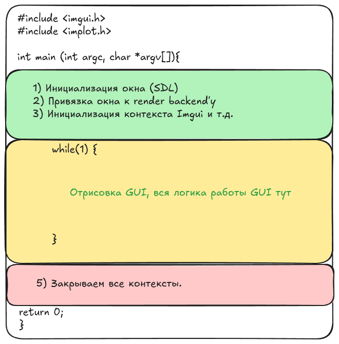

Первая программа с Dear Imgui
Схематично вся работа нашей программы будет выглядеть следующим образом (см рисунок ниже): 
С точки зрения кода программы, то простой интерфейс с одной кнопкой и выводом текста будет выглядеть следующим образом:
#include <GL/glew.h>
#include <SDL2/SDL.h>
#include <iostream>
#include <chrono>
#include <thread>
#include <cmath>
#include "backends/imgui_impl_opengl3.h"
#include "backends/imgui_impl_sdl2.h"
#include "imgui.h"
int main(int argc, char *argv[]) {
// SDL
SDL_Init(SDL_INIT_VIDEO | SDL_INIT_TIMER);
SDL_Window* window = SDL_CreateWindow(
"Backend start", SDL_WINDOWPOS_CENTERED, SDL_WINDOWPOS_CENTERED,
1024, 768, SDL_WINDOW_OPENGL | SDL_WINDOW_RESIZABLE);
SDL_GLContext gl_context = SDL_GL_CreateContext(window);
// Imgui
ImGui::CreateContext();
ImPlot::CreateContext();
// Ввод\вывод
ImGuiIO& io = ImGui::GetIO(); (void)io;
io.ConfigFlags |= ImGuiConfigFlags_NavEnableKeyboard; // Включить Keyboard Controls
io.ConfigFlags |= ImGuiConfigFlags_NavEnableGamepad; // Включить Gamepad Controls
io.ConfigFlags |= ImGuiConfigFlags_DockingEnable; // Включить Docking
// OpenGl backend
ImGui_ImplSDL2_InitForOpenGL(window, gl_context);
ImGui_ImplOpenGL3_Init("#version 330");
bool running = true;
while (running) {
// 0) Обработка event'ов (inputs, window resize, mouse moving, etc.);
SDL_Event event;
while (SDL_PollEvent(&event)) {
std::cout << "Processing some event: "<< event.type << std::endl;
ImGui_ImplSDL2_ProcessEvent(&event);
if (event.type == SDL_QUIT) {
running = false;
}
}
// 1) Начинаем создавать новый фрейм;
ImGui_ImplOpenGL3_NewFrame();
ImGui_ImplSDL2_NewFrame();
ImGui::NewFrame();
ImGui::DockSpaceOverViewport(0, nullptr, ImGuiDockNodeFlags_None);
// 2) Наш виджет с кнопкой;
{
static int counter = 0;
ImGui::Begin("Hello, world!");
ImGui::Text("This is some useful text.");
if (ImGui::Button("Button"))
counter++;
ImGui::Text("counter = %d", counter);
ImGui::End();
}
// 3) Отправляем на рендер;
ImGui::Render();
glClearColor(0.1f, 0.1f, 0.1f, 1.0f);
glClear(GL_COLOR_BUFFER_BIT);
ImGui_ImplOpenGL3_RenderDrawData(ImGui::GetDrawData());
SDL_GL_SwapWindow(window);
}
// Закрываем приложение безопасно.
ImGui_ImplOpenGL3_Shutdown();
ImGui_ImplSDL2_Shutdown();
ImPlot::DestroyContext();
ImGui::DestroyContext();
SDL_GL_DeleteContext(gl_context);
SDL_DestroyWindow(window);
SDL_Quit();
return 0;
}
Получаем:

Окно GUI интерфейса (SDL2)
SDL_Init(SDL_INIT_VIDEO | SDL_INIT_TIMER);
SDL_Window* window = SDL_CreateWindow(
"Backend start",
SDL_WINDOWPOS_CENTERED,
SDL_WINDOWPOS_CENTERED,
1024, 768,
SDL_WINDOW_OPENGL | SDL_WINDOW_RESIZABLE);
title— имя окна.x,y— координаты окна. Если хотим открыть на весь экран, то нужно ставить 0,0w,h— размеры окна. Что бы открыть на весть экран обращаемся к объекту displayMode.flags— тут выставляем флаги инициализации окна.
Backends
Обработка ивентов
Обработка ивентов происходит при помощи встроенной структуры SDL_Event. Каждый новый фрейм (или итерацию цикла) мы выполняем обработку ивентов в собственном цикле while, а потом уже отрисовываем все виджеты и т.д. Допольно простая архитектура.
// Обработка event'ов (inputs, window resize, mouse moving, etc.)
SDL_Event event;
while (SDL_PollEvent(&event)) {
std::cout << "Processing some event: "<< event.type << std::endl;
ImGui_ImplSDL2_ProcessEvent(&event);
if (event.type == SDL_QUIT) {
running = false;
}
}
typedef enum
{ /* Application events */
SDL_QUIT = 0x100, /**< User-requested quit */ # 256
...
/* Window events */
SDL_WINDOWEVENT = 0x200, /**< Window state change */ # 512
...
/* Mouse events */
SDL_MOUSEMOTION = 0x400, /**< Mouse moved */ # 1024
SDL_LASTEVENT = 0xFFFF
} SDL_EventType;